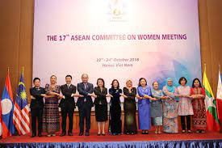
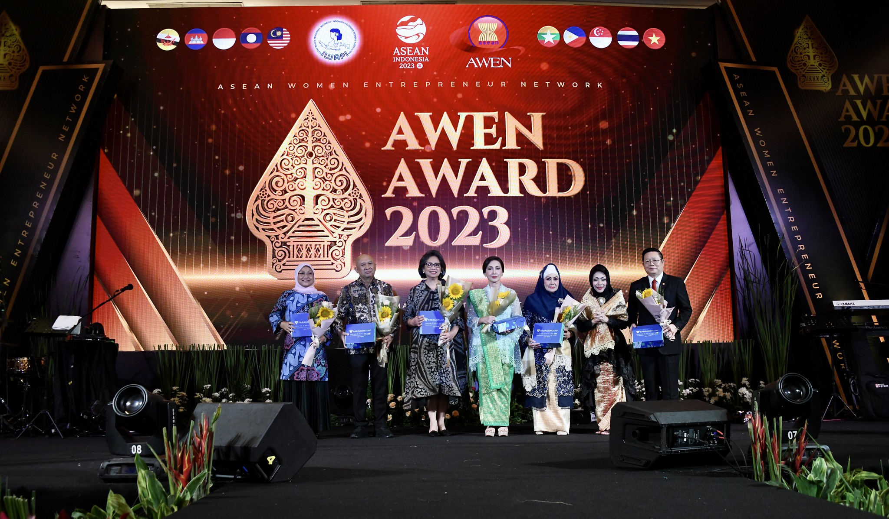
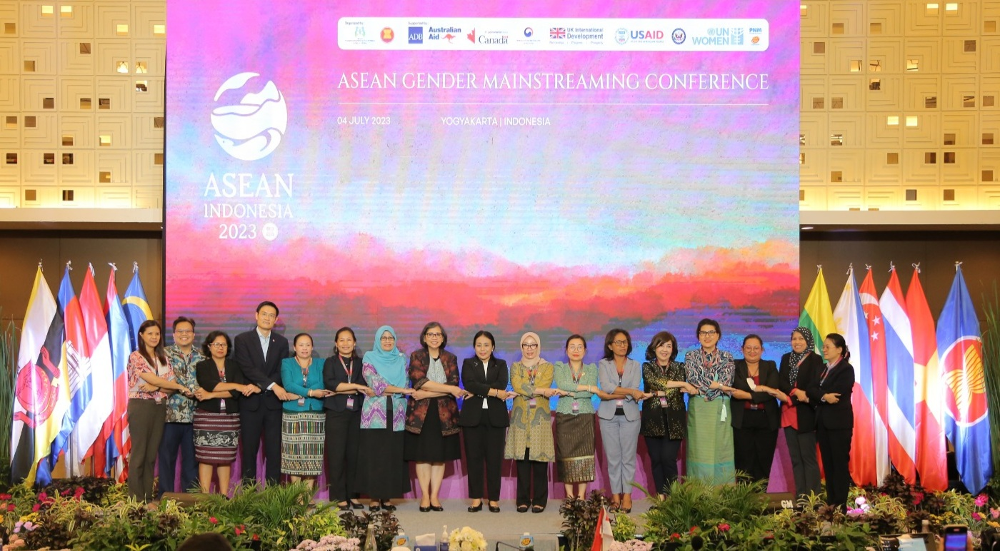

  
Di tingkat regional, Indonesia aktif dalam forum ASEAN Committee on Women (ACW). Melalui ACW, Indonesia bersama negara-negara ASEAN lainnya menyusun strategi untuk meningkatkan kesejahteraan perempuan, termasuk memastikan hak-hak perempuan terlindungi di tempat kerja. Salah satu hasil konkret adalah penyusunan pedoman perlindungan pekerja migran perempuan ASEAN.
Selain itu, Indonesia juga berpartisipasi dalam ASEAN Women Entrepreneurs Network (AWEN), yang mendukung pemberdayaan pengusaha perempuan di kawasan Asia Tenggara. Lewat jaringan ini, Indonesia mendorong perempuan wirausahawan untuk memperluas bisnis mereka dengan akses ke pasar regional.
Kerjasama lain adalah partisipasi Indonesia dalam ASEAN Gender Mainstreaming Strategic Framework, yang bertujuan mengintegrasikan perspektif gender dalam kebijakan publik di semua sektor. Ini membantu memastikan bahwa kesetaraan gender menjadi bagian penting dalam pengambilan keputusan di tingkat regional.